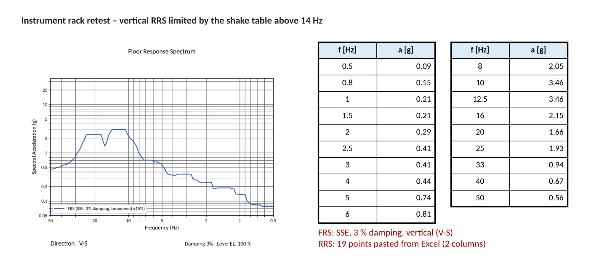
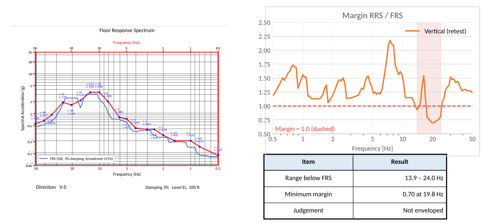

여기서
E−W, N−S : 수평 방향 표기
V−S, V−W : 수직 방향 표기
H, V : 수평과 수직
n
votes
: 일치한 OCR 판독 횟수
RRS와 FRS는 수평·수직 방향마다 값이 다르기 때문에, 비교하기 전에 그래프가 어느 방향인지 먼저 알아야 합니다.
프로그램은 그래프 아래쪽의 Direction 표기를 OCR로 읽어 수평(H) 또는 수직(V)으로 분류하고, 두 번 읽은 결과가 일치할 때만 자동으로 정합니다.
그렇지 않으면 사용자가 직접 고르게 해서, 방향이 잘못 비교되는 일을 막습니다.
여기서
B(x, y) : 어두운 픽셀 표시(1 = 어두움)
I(x, y) : 픽셀 밝기(0–255)
L
h
, L
v
: 가로선·세로선의 길이
W, H : 이미지 너비와 높이
n
lines
: 시작·끝이 같은 격자선 수
x
L
, x
R
, y
T
, y
B
: 그래프 영역의 왼쪽·오른쪽·위·아래 경계
그래프 이미지는 픽셀 좌표만 가지고 있기 때문에, 우선 실제 축이 이미지의 어디에 있는지 찾아야 합니다.
프로그램은 어두운 픽셀로 이루어진 긴 가로·세로 선을 격자선으로 추출하고, 같은 위치에서 반복되는 선으로 그래프 영역의 경계를 정합니다.
한마디로, 이미지 좌표와 그래프 좌표를 이어 주는 기준을 만드는 단계라는 뜻입니다.
여기서
x, y : 점의 픽셀 위치
f : 진동수 [Hz]
a : 가속도 [g]
x
L
, x
R
, y
T
, y
B
: 그래프 영역의 픽셀 경계
0.5, 50 : 진동수 축의 범위 [Hz]
0.05, 35 : 가속도 축의 범위 [g]
FRS 그래프는 보통 진동수와 가속도 축이 모두 Log Scale이기 때문에, 픽셀 위치를 단순 비례식으로 바꾸면 틀린 값이 나옵니다.
그래서 위의 식처럼 그래프 경계의 픽셀 위치와 축 값을 이용해 Log 축 위에서 선형 보간을 합니다.
이렇게 해야 RRS 점을 FRS와 같은 좌표계에 정확하게 그릴 수 있습니다.
여기서
RRS(f) : 시험의 요구 응답 Spectrum
FRS(f) : 층 응답 Spectrum
Margin(f) : 진동수 f에서의 여유율
f : 진동수 [Hz]
기기 검증 시험에서는 RRS가 관심 진동수 범위(0.5~50 Hz) 전체에서 FRS를 포락해야 합니다.
프로그램은 각 진동수에서 RRS/FRS 비율을 여유율로 계산하고, 1보다 작은 구간을 찾아 표시합니다.
그 구간이 없으면 시험 입력이 요구 Spectrum을 만족한다고 볼 수 있습니다.
이번 예제에서는 안전성 관련 계측기 랙 재시험의 수직 시험 Spectrum을 FRS(SSE, Damping 3 %, V-S 방향, 0.5~50 Hz)와 비교합니다.
진동대 한계 때문에 14 Hz 이상에서는 수직 입력이 제한되었고, RRS 19개 점은 Excel에서 붙여넣었습니다.
프로그램은 Direction 표기를 V-S로 읽고, 그래프 영역(x 102~837 px, y 112~568 px)을 찾아서 RRS 선을 그렸습니다.
그 결과, 13.9~24.0 Hz 구간에서 빨간 선이 FRS 아래로 내려가고, 최소 여유율은 19.8 Hz에서 0.70입니다.
한마디로, RRS가 FRS를 포락하지 못하기 때문에 이 구간은 재시험하거나 별도의 근거를 제시해야 한다는 뜻입니다.


RRS 검증 페이지로 돌아가기